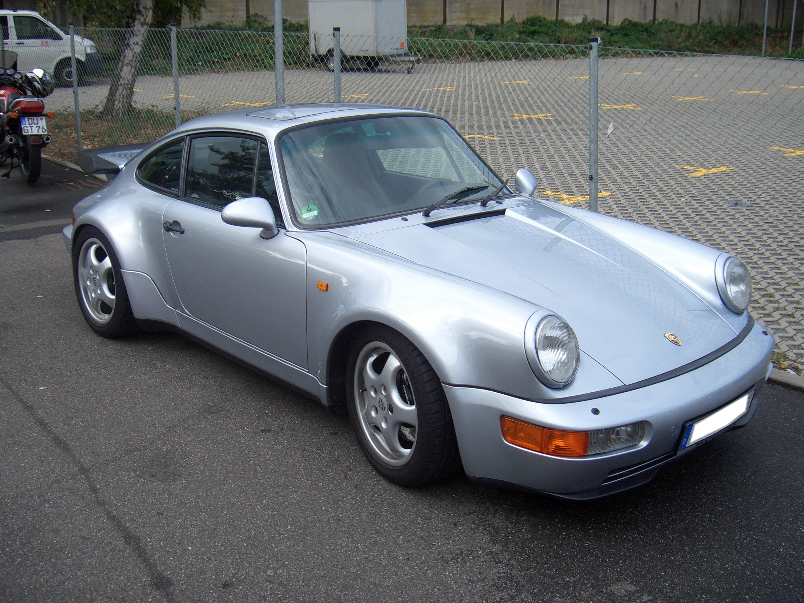

911-sarja (1963–1989)
Ensimmäinen Porsche 911 esiteltiin Frankfurtin autonäyttelyssä vuonna 1963. Sen mallinimi oli alkuun 901, mutta koska Peugeot omisti oikeudet kolminumeroiseen mallimerkintään jossa keskimmäisenä numerona oli nolla, auton tullessa vuonna 1964 myyntiin mallinimeksi vaihdettiin 911 (82 kpl ehti valmistua 901-malleina). Ulkonäöltään auto muistutti monin tavoin edeltäjäänsä Porsche 356:a mutta oli kaikilta mitoiltaan suurempi ja siinä oli selkeästi enemmän ikkunapinta-alaa. Muun muassa pclassemmän akselivälinsä ansiosta 911 oli selkeästi 356:ta mukavampi matka-auto. Tämä alkuun omaksuttu muotoilu pysyi lähes ennallaan noin 30 vuoden ajan. 356:ssa käytetyn nelisylinterisen moottorin sijasta käytettiin 911:ssä 6-sylinteristä moottoria, ja niin alustan kuin jarrujenkin osalta uudessa mallissa sovellettiin nykyaikaisempaa tekniikkaa: voitelussa oli täysin luovuttu rasvanipoista, ja joka pyörää hclassastamassa oli levyjarrut.
Auton moottoriteho oli aluksi 130 hevosvoimaa mutta kasvoi vuosien mittaan 231 hevosvoimaan usean kehitysvaiheen kautta. Vuonna 1975 esiteltiin erikoisversio 911 Turbo, joka oli ensimmäinen turboahdettu tuotantourheiluauto. Malli tunnetaan myös nimellä Porsche 930. Muutokset perusmalliin olivat laajoja.

964-sarja (1989–1993)
Vuonna 1989 esiteltiin uusi 964-malli aikaisemman jo vanhentuneen 911-mallin tilalle. Virallisesta 964-nimestä huolimatta käytettiin markkinoinnissa edelleen mallinimeä 911. Edeltäjäänsä verrattuna sen osista 80 % oli kokonaan uusia. Puskureita lukuun ottamatta auto kuitenkin muistuttaa ulkonäöltään pitkälti edeltäjäänsä ja peruskori onkin ulkokuoreltaan classenttinen. Suurimmat muutokset näkyivätkin auton tekniikassa. Uusia varusteita olivat muun muassa ABS-jarrut, ohjaustehostin ja turvatyyny. Käsivaihteiston rinnalle esiteltiin uusi nelinopeuksinen Tiptronic-automaattivaihteisto. Myös auton alusta ja jousitus oli kokonaan uusittu ja nyt pyöräntuennassa sovellettiin ensi kertaa McPherson-joustintukia. Moottorina käytettiin edelleen ilmajäähdytteistä bokseria, jonka iskutilavuus oli nyt kasvatettu 3,6 litraan (250 hv). Lisätehoa oli haettu kaksoissytytysjärjestelmällä, eli joka sylinterissä oli kaksi sytytystulppaa. Kaikissa moottoreissa oli myös katalysaattori, ja 964-versio olikin pienentyneclassen päästöjensä ansiosta ensimmäinen Porsche, joka voitiin toimittaa kaikkiin maailman maihin samalla perusmoottorilla varustettuna.
Auton perusmalli oli takavetoinen Carrera 2, mutta saatavana oli myös nelivetoinen Carrera 4. Tämä oli ensimmäinen kerta kun Porsche tarjosi nelivedon massatuotantona valmistetussa autossa. Nelivetojärjestelmä oli yksinkertaistettu versio Porsche 959:n tekniikasta. Sekä Carrera 2 että 4 olivat saatavana normaalina Coupé-mallina, Targana tai Cabrioletina. Vuodesta 1990 lähtien mallistoon kuului myös Coupé-mallinen Turbo-versio, josta käytetään myös mallimerkintää 965. Turbossa käytettiin 3,3-litraista (3299 cm3) 320-hevosvoimaista moottoria. Myöhemmin Turbonkin iskutilavuus kasvoi 3,6 litraan ja maksimiteho nousi 360 hv:aan. Turbo-version moottori oli kuitenkin läheisempää sukua alkuperäisen 911 Turbon 930-moottorille kuin 964:n kaksoissytytysmoottoriin. 964-sarjan tuotanto lopetettiin vuonna 1993, jolloin vielä valmistettiin noin 900 kappaleen erä Cabriolet-malliin perustuvaa Speedster-versiota. Lisäksi valmistettiin myös n. 80 kappaleen erikoiserä Turbo S -mallia, joka oli kevennetty ja viritetty 380-hevosvoimainen versio Turbosta.
993-sarja (1993–1998)
Vuonna 1993 esitelty 993-sarja jäi viimeiseksi 911:ksi, jossa käytettiin ilmajäähdytteistä moottoria. Ulkomuodoiltaan auto oli edelleen pitkälti alkuperäisen 911:n kaltainen. Puskurit ja ajovalot oli kuitenkin aikaisempaa selkeämmin integroitu itse koriin, ja ensi kertaa etulokasuojien profiili oli nyt alkuperäistä 911:aa matalampi. Sisätiloiltaan 993-mallia oli muutettu hyvin maltillisesti Carrera 2 ja 4-malleissa oli edelleen 3,6-litrainen bokseri, jonka maksimiteho oli 272 hv. Mallivuodesta 1996 lähtien teho nousi 13 hv:lla, kun moottoriin lisättiin muuttuvapituuksinen imusarja VarioRam. Huippumallina olleen nelivetoisen 911 Turbon tuplaturbolla varustettu moottori oli teholtaan 408 hv ja kiihdytti auton 0–100 km/h 4,5 sekunnissa huippunopeuden ollessa 290 km/h. Vuodesta 1995 lähtien valmistettiin lisäksi Carrera 4S -mallia, joka sijoittui mallistossa Turbon ja perus-Carreran väliin. Moottori oli sama kuin Carrerassa, kori ja jarrut puolestaan samat kuin Turbossa. Vuonna 1994 esiteltiin GT2-sarjan ensimmäinen sukupolvi. Se perustuu Turboon, mutta tärkeimpänä muutoksena auto on vain takavetoinen painon säästämiseksi. Lisäksi muun muassa koria on selvästi uudelleen muotoiltu. Moottoriteho oli alkupään malleissa 430 hv ja vuodesta 1998 eteenpäin 450 hv. Autosta kehitettiin myös GT2 Evo -versio, joka suunniteltiin FIA:n GT2-kilpaluokkaa varten.

996-sarja (1998–2004)
Mallivuodesta 1998 lähtien valmistetussa 996-sarjan autossa esiteltiin kokonaan uusi korimalli, joka ei enää perustunut alkuperäiseen 1960-luvulla esiteltyyn muotoiluun. Auto oli aikaisempaa suurempi ja ennen kaikkea mukavampi ja soveltui siten entistä paremmin myös arkiajoon. Päästönormien jatkuvasti tiukentuessa samalla luovuttiin myös ilmajäähdytteisestä moottorista ja esiteltiin kokonaan uusi vesijäähdytteinen 3,4-litrainen ja 300-hevosvoimainen moottori. 996 oli teknisesti ja ulkonäöllisesti valtava askel eteenpäin jo vanhentuneeseen 993-malliin verrattuna. Monet 911-fanaatikot eivät kuitenkaan pitäneet uutta mallia "aitona" 911:nä. Suurta kritiikkiä saivat osakseen muun muassa uudelleen muotoillut etuvaloumpiot. Suorituskyvyltään uusi 996 oli kuitenkin askel eteenpäin niin suorilla kuin mutkissakin. Takavetoinen perusmalli tunnettiin edelleen Carrera-nimellä. Lisäksi saatavana oli edellisen 993-mallin tapaan Carrera 4 ja 4S-mallit sekä Frankfurtissa vuonna 1999 esitelty nelivetoinen 420-hevosvoimainen Turbo. Vuonna 2001 esiteltiin edellisen 993-sarjan mukaisesti takavetoinen GT2-malli, jossa on muun muassa leveämmät lokasuojat, aggressiivisemman muotoinen etuspoileri ja suurempi takaspoileri. Moottorin maksimiteho oli aluksi 462 hv ja myöhemmin se nostettiin 483 hevosvoimaan.
997-sarja (2004–2011)
997-sarjan Coupé-mallin valmistus aloitettiin vuonna 2004. Vuoden 2005 alusta lähtien saatavana on ollut myös Detroitin autonäyttelyssä samana vuonna esitelty Cabrio. Korin muotoiluun ei tehty suuria muutoksia, mutta edellisessä mallissa kritiikkiä saaneet ajovaloumpiot olivat vaihtuneet takaisin pyöreiksi. Monet pitivätkin mallin esittelyä paluuna "alkuperäiseen" 911-malliin, edellisen 996-sarjan harharetken jälkeen. Auton kokonaispaino kasvoi jonkin verran, mutta vastaavanlaista tehonlisäystä ei kuitenkaan nähty moottoreclassen osalta. 997 oli edeltäjänsä tapaan tarjolla niin taka- kuin nelivetoisenakin ja sekä käsi- että automaattivahteistolla (Tiptronic). Carreran moottorin iskutilavuus oli edelleen 3,6 litraa ja maksimiteho 320 hv. Carrera S ja 4S -mallien moottorin iskutilavuus oli 3,8 litraa ja teho 355 hv. Kesäkuussa 2006 tuli myyntiin uusi 911 Turbo 3,6-litraisella, 485 hv:lla moottorilla ja nelivedolla. Marraskuusta 2006 lähtien mallistoon on kuulunut myös Targa 4 -malli.
Toukokuussa 2007 esiteltiin saman vuoden syyskuussa myyntiin tuleva 911 Turbo Cabriolet. Kovakattoisen turbomallin tapaan 2+2-paikkainen avomalli on varustettu 3,6-litraisella 6-sylinterisellä boxer-moottorilla, jossa käytetään muuttuvageometrista turboahdinta (VTG - Variable Turbine Geometry). Lisävarusteena saatavalla Sport Chrono Turbo Packageen kuuluvalla overboost-toiminnolla 620 Nm:n maksimivääntö voi nousta hetkellisesti 680 Nm:iin. Kiihtyvyys 0–100 km/h on manuaalivaihteistolla 4 s, ja Tiptronic S -vaihteistolla 3,8 s. Molempien mallien huippunopeus on 310 km/h. 911 Turbo Cabrion keskikulutukseksi ilmoitetaan 12,9 l/100 km. Avomallin vaatimista korin vahvistuksista huolimatta se painaa vain 70 kg umpikorista autoa enemmän. Kolmikerroksinen pehmeä katto liikkuu ääriasennosta toiseen noin 20 sekunnissa. Ilmanvastuskertoimeksi ilmoitetaan 0,31.
Vuosimallin 2008 autoon tehtiin pieni kasvojenkohotus. Uudistettu malli esiteltiin Frankfurtin autonäyttelyssä syksyllä 2007. Uudistukset koskivat Carrera- ja Carrera Cabriolet-malleja ja lisäksi Turboa. Ulkonäöllisesti 911 ei muuttunut paljon. Etu- ja takavalot kuitenkin uusittiin, samoin puskurit. Moottoreina käytettiin edelleen 3,6- ja 3,8-litraisia moottoreita. Vuoden 2007 lopulla esiteltiin myös GT2-malli, jonka perusmoottori on sama kuin 997 turbossakin. Takavetoinen auto on runsaat 100 kg kevyempi kuin Turbo-malli. Moottorissa on 530 hevosvoimaa (395 kW) 6500 rpm (Turbossa 480 hv). GT2:n 50hv tehonlisäys 997 turboon nähden on saatu turboahtimien kompressorikoteloita muokkaamalla. GT2 kiihtyy 3,6 sekunnissa 97 km/h nopeuteen, huippunopeuden ollessa 329 km/h. Mielenkiintoista on, että moottorin optimointien johdosta GT2:n polttoaineenkukutus oli pienempi kuin tavallisen Turbon.

991-sarja (2011-)
Porsche 991 on valmistajansa käyttämä tunnus seitsemännen sukupolven 911-mallista. Malli esiteltiin Frankfurtin autonäyttelyssä syyskuussa 2011 ja ensimmäinen tuotantovuosimalli on 2012. Auton rakenne on kokonaan uusi. 991-mallin muotokieli pysyttelee edeltäjiensä tapaan uskollisena alkuperäiselle vuoden 1963 mallille. Selkeimmin 991 erottuu edeltäjästään 10 cm pclassemmän akselivälin tuoman ryhdikkyyden kautta. Myös pituus on kasvanut mallista riippuen noin 7 cm. Suhteellisesti edempänä sijaitseva etuakseli on mahdollistanut paremman painonjakauman sekä kaarreajokäytöksen.
Mallisto on edellisen sukupolven tapaan varsin laaja ja monimuotoinen. Edettäessä Carrerasta (350hv/390 nm) ja Carrera S:stä (400hv/440 nm) eteenpäin, on mahdollisuus valita suorituskykyisempiä malliversioita joko Gran Turismo- tai kilpa-automaisempina. Ensin mainittuja edustavat Turbot ja viimeksi mainittuja GT3-mallit.